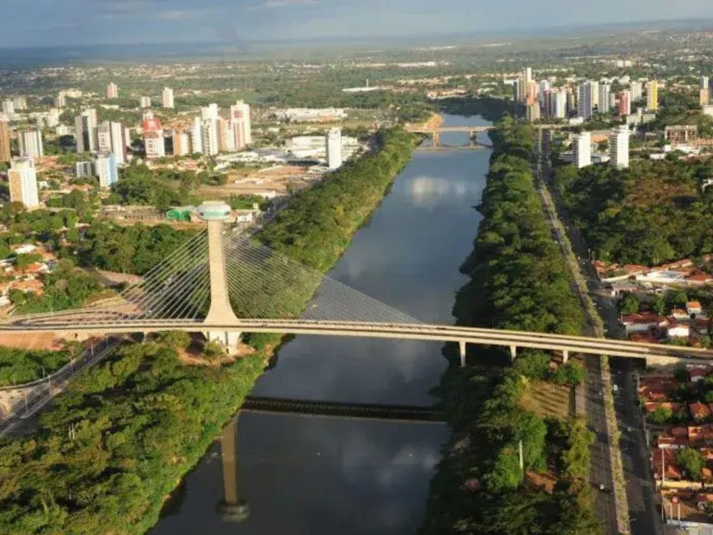

Piauí é um estado localizado na transição entre o Nordeste e o Norte do Brasil, ocupando uma área de 251.755 km². Conhecido como o "berço do homem americano", o estado destaca-se por sua riquíssima bagagem arqueológica, seu rápido crescimento na produção de grãos e uma infraestrutura moderna focada em transição energética
